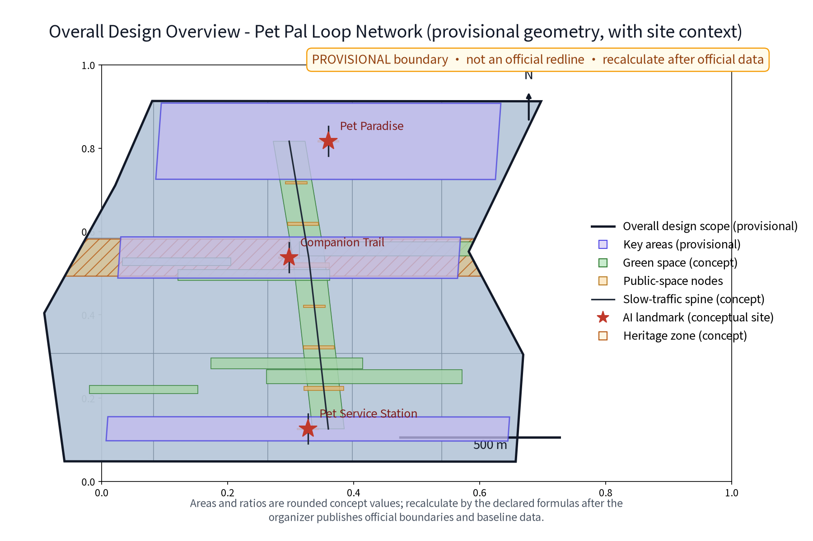
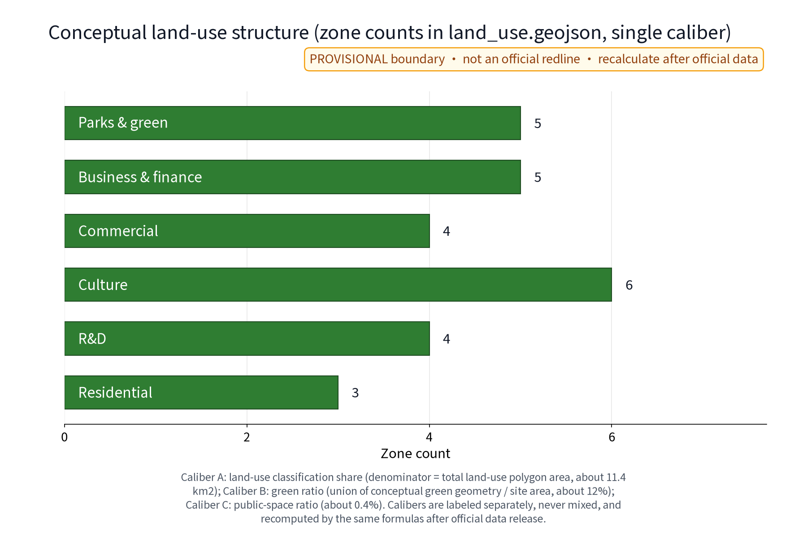
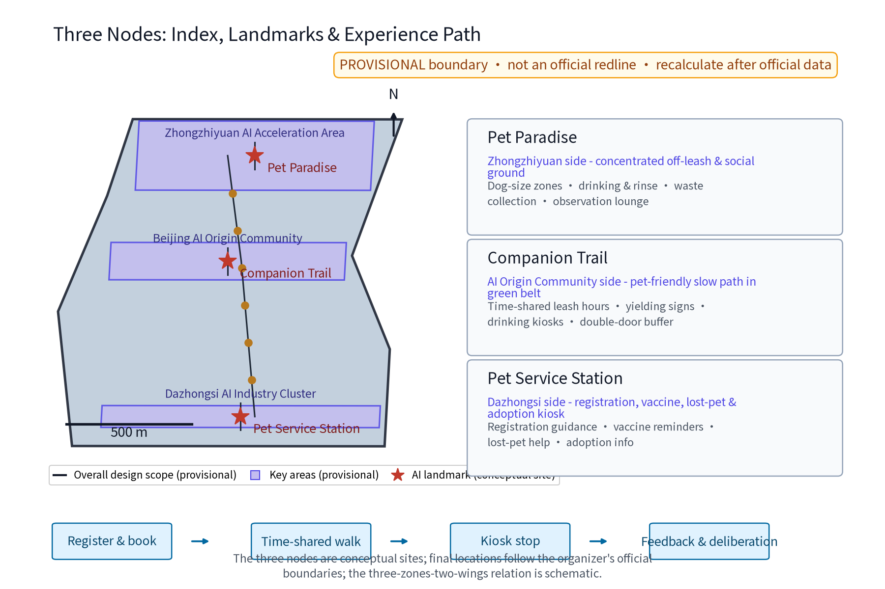
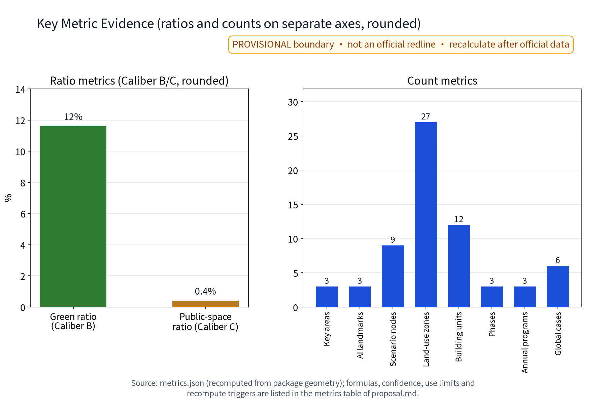
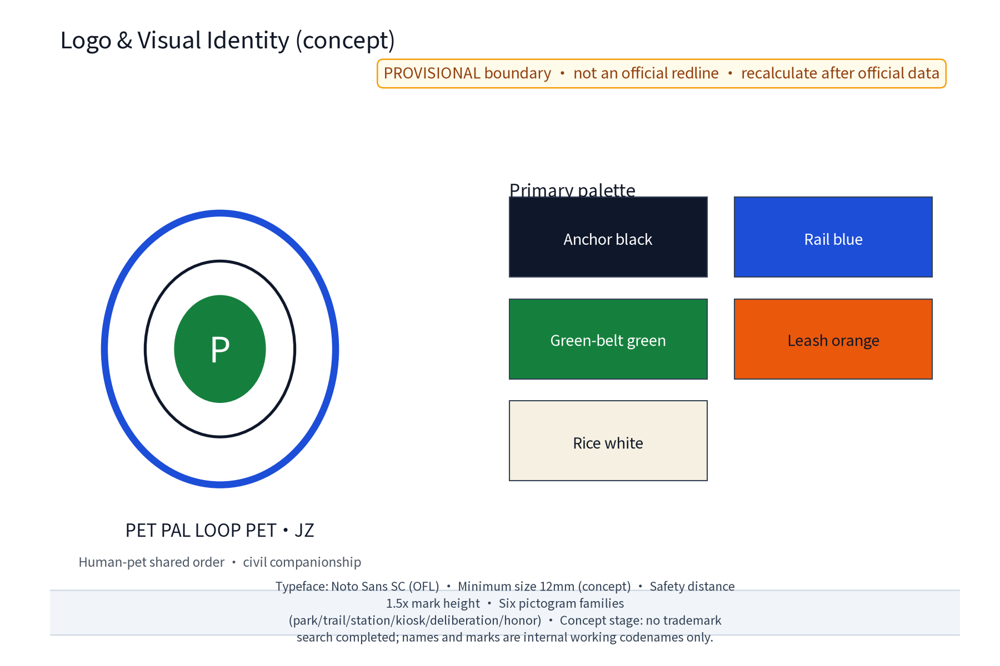
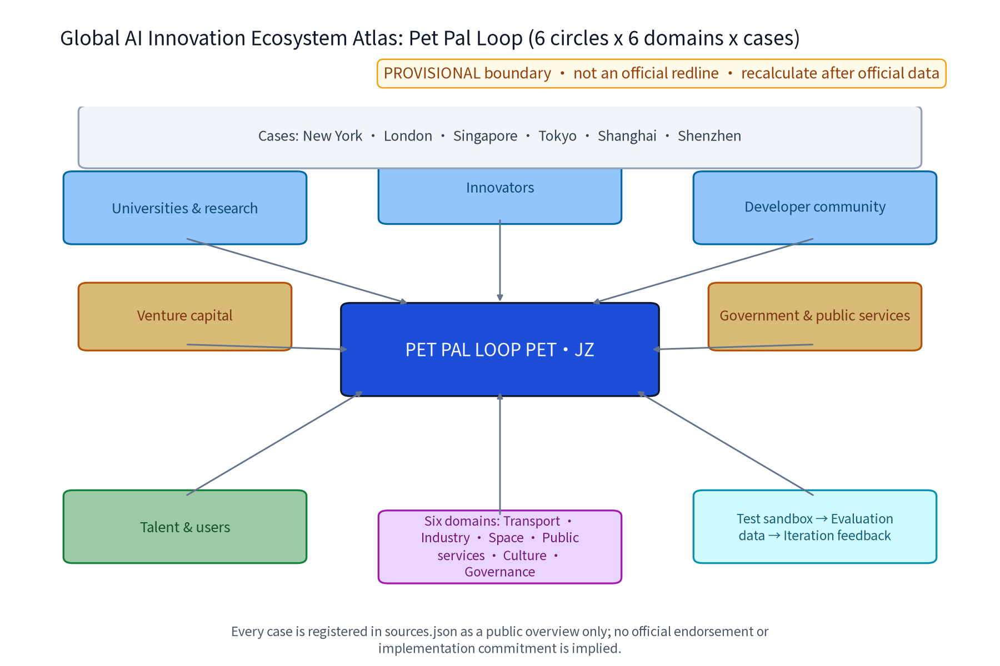

PET PAL LOOP (PET·JZ): Pet-Friendly Public Space & Companion-Animal Stewardship Network (Concept)
The Pet Pal Loop (PET·JZ) is the pet-friendly specialism along the Jing-Zhang AI Innovation Belt: the Pet Paradise (concentrated off-leash and social ground by Zhongzhiyuan: dog-size zones, drinking and rinse points, waste collection), the Companion Trail (a pet-friendly slow path in the green belt by the Beijing AI Origin Community: time-shared leash hours, leash prompts and yielding signs, drinking kiosks) and the Pet Service Station (registration guidance, vaccine reminders, lost-pet assistance and adoption information by Dazhongsi, co-located with community services). Three positioning statements and five functions are realized in a perceptible public-space experience; a 'three zones, two wings' collaboration loop (Beiwei Community, Future Science City, Huairou Science City, E-Town and Jing-Jin-Ji, concept) supports regional coordination; five personas, 10 scenario cards, 3 industry test protocols, 3 annual programmes, 6 global pet-friendly and AI-ecosystem cases with an ecosystem atlas, a landmark directory, an honor display system, a reversible component library, a developer community and scenario-open conversion mechanisms (concept) form the complete narrative. Before trademark clearance, all names and marks are treated as internal working codenames. Five AI+ scenario families process anonymized aggregates only, with human review of key decisions, no excessive monitoring and no individual-identification tracking. Core metrics (site_area_sqm, green_ratio, public_space_ratio) are recomputed from package geometry; all values are provisional and require recalculation when official data are released. Everything is conceptual advice; no FAR, height, retain/renovate/demolish, pet-count, registration-count, investment or implementation conclusions are given and no official data are fabricated.
Position: this chapter is a concept draft for the pet-friendly specialism. It gives no FAR, building height, retain/renovate/demolish or engineering conclusions and fabricates no official data. The main name is Pet Pal Loop (PET·JZ; full-name direction Smart Companion Loop; the former working codename CMP.JZ is deprecated and all deliverables uniformly use PET·JZ). All data are participant provisional model data, not authoritative data.
Design Basis and Source List
The listed public historical materials, planning reports and general standards form the concept working basis; the data actually used by this package are recorded in sources.json, and unverified items are honestly demoted to research hypotheses. The list covers: the call for proposals and agent taskbook (overall concept, main name, English name and naming family, public-space experience, all-age living and community governance dimensions, and six agent tasks); the public caliber of 'retain-renovate-demolish combined, prioritizing heritage park fabric and railway relics' along the Jing-Zhang railway park; Zhongguancun innovation culture materials; the barrier-free environment law and related public accessibility standards; public pet-stewardship regulatory calibers; and international/domestic pet-friendly public space and AI-ecosystem cases. Item-level provenance (publisher, URL, published and accessed dates, reuse boundary) is kept in sources.json; anything unverifiable is stated as a research hypothesis, not formal evidence. Data gaps are declared: the repository has no official overall boundary or key-area geometry yet; all areas and indicators in this draft are low-confidence design-model values on provisional geometry and are recalculated when official boundaries and data are released; FAR, building height and other indicators that depend on unpublished official control conditions remain unknown with no values given.
Evidence: Source, Source.
Three-Level Scope Framework
The three scopes follow the official announcement text: coordinated research area approximately 43.6 km², overall design area approximately 11.4 km², and key detailed-design areas totaling approximately 368.4 ha (official announcement text caliber, not self-computed); this package's sub-scope sits inside the overall design area and anchors on the three key areas; all boundaries are provisional and are not commitment boundaries. The framework is 'coordinated research - overall design - key areas': the coordinated research layer studies industry and the future city and judges how pet-stewardship demand aligns with communities, industry and public space along the corridor; the overall design layer develops the 'one park, one trail, one station' pet-friendly network concept and slow-mobility skeleton at urban-renewal and regulatory-plan depth; the key-area layer details the three nodes. The 'three zones, two wings' mapping (concept): the Zhongzhiyuan acceleration zone hosts the park scenarios and AI care-model validation; the AI Origin Community hosts the daily trail experience; the Dazhongsi industry cluster hosts the service station and new-business interfaces; the Zhongguancun tech-service wing and the Xiaoyue River scenario wing provide computing, data and scenario-open mechanisms. The framework is conceptual organization, not a statutory zoning, regulatory-plan or engineering conclusion.
Evidence: Source, Source.
Coordinated Research Area: Industry and Future City Research
One test of a future city is whether people and companion animals can share public space. The coordinated research treats pet stewardship as the seam of public-space experience, all-age living and community governance: on one side are the daily friction and safety concerns of dog-owning families, older pet owners, parents with children and residents without pets; on the other are the industrial opportunities of pet services, consumption and digital scenarios. Regional coordination is developed as a 'three zones, two wings' loop (concept): Beiwei Community (Haidian universities and innovation communities), Future Science City, Huairou Science City, E-Town (Yizhuang) and the Jing-Jin-Ji direction form five supports for pet-friendly service sharing, governance learning and anonymized data-element exchange; Haidian, as the core section of the belt, contributes the innovation semantics of its universities, science parks and Zhongguancun culture to the pet-stewardship narrative. Benchmark cases are summarized from public channels only, each registered in sources.json: public practice in New York and London shows that dedicated off-leash zones with time-sharing and leash rules reduce human-pet conflict; Singapore's public experience includes designated pet areas with clear leash and cleanup requirements; Tokyo publishes dog-walking maps and dog-registration service guidance; Shanghai and Shenzhen are public domestic pilots for pet-friendly malls and parks. These are method references at the level of public information only; no details, figures or scales are copied or invented.
| Case | Country/City | Nature | Insight | Source (institution · URL · accessed) |
|---|---|---|---|---|
| NYC Parks dog runs | USA/New York | Pet-friendly parks | Off-leash zones with time-sharing and leash rules | nycgovparks.org · official site · 2026-08 |
| The Royal Parks | UK/London | Pet-friendly parks | Designated dog areas with leash and cleanup duties | royalparks.org.uk · official site · 2026-08 |
| NParks Singapore | Singapore | Pet-friendly public space | Designated pet areas with clear rules | nparks.gov.sg · official site · 2026-08 |
| Tokyo dog registration | Japan/Tokyo | Registration and dog-walking map | Dog-walking maps and registration guidance | metro.tokyo.lg.jp · official site · 2026-08 |
| Shanghai pet-friendly pilots | China/Shanghai | Domestic pilot direction | Advocacy zoning in malls and parks | shanghai.gov.cn · official site · 2026-08 |
| Shenzhen pet-friendly parks | China/Shenzhen | Domestic pilot direction | Advocacy practice in parks | sz.gov.cn · official site · 2026-08 |
Evidence: Source, Source.
Overall Design Area: Urban Renewal and Regulatory-Plan-Level Urban Design
The overall design organizes the 'one park, one trail, one station' concept loop along the Jing-Zhang green-belt public-space system, using the belt's east-west stitching and north-south open structure for pet-friendly nodes and slow links; all of it is a movable, replaceable conceptual structure, not road redlines, plots or engineering locations. The three nodes follow stock-first, light-touch, reversible-component directions: the Pet Paradise uses green-belt edge sites, the Companion Trail uses the existing slow green belt, and the Pet Service Station is co-located with community service points; no building indicators or development intensity are proposed. Regulatory-plan depth is expressed as 'problem - spatial object - indicator - data gap - recompute path': each node states the problem it solves, its spatial object, corresponding indicators, materials still needed and the recalculation trigger once official data arrive; FAR, building height and demolition quantities remain unknown and the concept never substitutes for regulatory-plan approval. Land use follows a single caliber: 'land-use classification share' (Caliber A) with the total land-use polygon area (equal to the overall design area, about 11.4 km²) as denominator; conceptual classes and zone counts match land_use.geojson and the figures (27 conceptual zones in total; classes include park green, R&D, business/financial and commercial). The 'green ratio about 12%' is the blue-green layer recalculation caliber (Caliber B: union of conceptual green polygons divided by the site area; package recompute value 11.6%); the 'public-space ratio about 0.4%' is the public-space node caliber (Caliber C). The two calibers share the same denominator but count different objects; they are labeled separately and never mixed, and all are recalculated by the same formulas after official data are released - which explains the difference between the park-green share and the green ratio.


Evidence: Source, Metric.
Detailed Design of Key Areas
Node locations are concept-level points that must be relocated after site surveys, material verification, authority assessment and public comments; green-belt routes and slow paths between nodes form the complete experience circulation, expressed in the drawings and geometry layers. Landmark directory (three, concept): the Pet Paradise (Zhongzhiyuan side) - concentrated off-leash and social ground with dog-size activity zones, drinking and rinse points, enclosed waste collection and an owners' observation lounge; human and dog routes are separated with double-door buffers and accessible paths. The Companion Trail (AI Origin Community side) - a pet-friendly slow path in the green belt with time-shared leash hours, leash prompts and yielding signs and drinking kiosks, shared with pet-free slow users. The Pet Service Station (Dazhongsi side) - registration guidance, vaccine and annual-check reminders, lost-pet assistance and adoption information, co-located with community services, with a staffed counter, public notice board and suggestion box. All three nodes carry an honor display system (the 'Pet Pal Honor Board': group honors and volunteer recognition with sources disclosed and content human-reviewed) and a reversible public-space component library (modular seating, kiosks, drinking/rinse units, signage and collection bins that are demountable, rotatable and re-usable at graded levels, supporting both event deployment and quiet everyday states). Experience circulation and the nine-node directory (3 landmarks plus 6 AI scenario nodes, concept): park entrance buffer node, dog-size zone node, park observation node, trail east kiosk node, trail west kiosk node, station counter node, station adoption wall node, residents' deliberation pavilion node and annual notice board node. Accessibility and inclusion: user journeys for persons with disabilities (visually impaired users reach kiosks via tactile signage and voice prompts; wheelchair users enter the observation lounge via accessible paths; deaf users get time-slot information in text and graphics) are covered by large-type, tactile, voice, staffed and paper channels, with staffed fallback reserved.

Evidence: Spatial data (three node polygons from geometry/key_areas.geojson), Metric, Metric.
AI Innovation Ecosystem, Personas, and AI+ Scenarios
The AI innovation ecosystem is bounded by 'small models, back-office assistance, anonymized aggregation, human review': the five AI+ scenario families only generate reminders, drafts, classifications and aggregated prompts; they make no public decisions, do not directly control site equipment and can be removed at any time. Five personas: dog-owning families, residents without pets, older pet owners, parents with children and pet-industry practitioners, joined by community workers and university students in governance and volunteering; elders, children and families, persons with disabilities and other vulnerable groups are served by all-age, inclusive, aging-friendly layers with staffed, paper and telephone non-digital channels and large-type and tactile information. Six-domain mapping: AI scenarios land in transport (time-share scheduling and yielding prompts), industry (merchant alliance and business interfaces), space (node facilities), public services (registration reminders and lost-pet assistance), culture (pet-stewardship narrative) and governance (deliberation and disclosure). AI technical protocols (concept, four): model evaluation (benchmark sets with human-review comparison), data quality (de-identification and quality validation of anonymized aggregates), error stratification (per scenario and time-period stratification with disclosure) and runtime monitoring (false-positive rate and human-intervention rate, weekly review). Data lifecycle (concept): anonymized aggregates are retained for a fixed period only, periodically purged, used solely for the stated purpose and never for individual identification. Per-scenario data flows and privacy controls (data controller, legal basis, minimum fields, retention, rights/deletion/appeal, non-digital alternatives) follow:
| Data flow | Data controller (concept) | Basis & minimum fields | Retention & deletion | Rights & appeal | Non-digital alternative |
|---|---|---|---|---|---|
| Vaccine reminder | Station operator + authority process | Registration number and due date for service fulfilment; no individual location | Deleted after service ends; annual disclosure | Staffed counter enquiry and appeal | Phone, paper, on-site notice |
| Lost-pet assistance | Station operator | Anonymized announcement text; no image identification | Archived after announcement ends | Human verification and removal | Notice wall, broadcast |
| Time-share scheduling | Operator + deliberation council | Anonymized time-slot counts | Cleared weekly | Council review | Physical time-slot board |
| Waste reporting | Cleaning duty holder | De-identified class and work-order draft | Cleared after work order closed | Human-confirmed dispatch | Phone reporting |
| Q&A | Merchant alliance + professional team | Anonymized question corpus only | Cleared quarterly | Human review of answers | Staffed information desk |
10 scenario cards (concept) follow; capabilities, data/privacy boundaries and operators are limited by human review and public calibers:
| Scenario card | Spatial carrier | AI capability | Data and privacy boundary | Operator |
|---|---|---|---|---|
| Card 01 Registration reminder | Pet Service Station | Vaccine/annual-check reminder draft | Registration serves fulfilment only; no individual profiling | Station + authority process |
| Card 02 Lost-pet assistance | Pet Service Station | Anonymized match prompt draft | No image identification; human verification before release | Station + volunteer team |
| Card 03 Time-share scheduling | Paradise and Trail | Time-slot timetable draft | Anonymized counts; no automatic facility control | Operator + council |
| Card 04 Waste reporting | Trail and Paradise | De-identified class and cleaning draft | No location trails; human-confirmed dispatch | Cleaning duty holder |
| Card 05 Pet knowledge Q&A | Station and merchant alliance | Q&A draft from approved corpus | Legal/administrative judgment by humans | Professional team + alliance |
| Card 06 Adoption matching | Pet Service Station | Anonymized adoption match prompt | Public information only; human review | Station + volunteers |
| Card 07 Kiosk repair | Trail kiosks | Fault classification work-order draft | Anonymized; human dispatch | Operator |
| Card 08 Deliberation minutes | Residents' deliberation pavilion | Anonymized opinion classification draft | Opinions de-identified; human review before disclosure | Community workers |
| Card 09 Honor editing | Pet Pal Honor Board | Group honor content draft | Group honors only; no individual identification | Community + operator |
| Card 10 Open data | Developer community | Anonymized aggregate data API and sandbox | Anonymized aggregates only; sandbox isolated | Developer community + professional team |
3 industry test protocols (concept): each covers the object under test, indicators (concept), pass criteria and RACI division (concept); results feed pilot decisions and stop conditions:
| Test protocol | Object under test | Indicators (concept) | Pass criteria (concept) | Lead / collaborate (RACI concept) |
|---|---|---|---|---|
| Protocol 1 Human-dog route separation | Pet Paradise | Conflict rate, double-door buffer efficiency | Conflict handling loop completed in observation period | Operator leads, volunteers collaborate |
| Protocol 2 Time-shared trail test | Companion Trail | Time-slot offset rate, sign recognition rate | Both pet and pet-free users satisfied | Community leads, professional team collaborates |
| Protocol 3 AI reminder human-review test | Registration reminder AI | Review coverage, false-positive rate | Full human review of key decisions; rate disclosed | Professional team leads, university collaborates |
Evidence: Source, Metric, Metric.
Land Use, Building Scale, and Retain-Renovate-Demolish Strategy
Land-use expression uses conceptual zoning directions for public space, green space and public-service facilities without changing statutory land-use classes; the Pet Paradise and the Companion Trail sit on existing green belt and edge-site directions, and the Pet Service Station is co-located with a community service point; no new-construction land judgment is involved and heritage, green-line and blue-line constraints are not touched. The single land-use caliber (Caliber A) is in the table below; class names and zone counts match land_use.geojson, the land-use figure and the metrics file:
| Land-use class (Caliber A) | Conceptual zones | Note & recompute trigger |
|---|---|---|
| Park green | 5 | Includes the Jing-Zhang heritage park belt concept; recompute after official data |
| Culture | 6 | Conceptual zoning; recompute after official data |
| Business & finance | 5 | Conceptual zoning; recompute after official data |
| R&D | 4 | Conceptual zoning; recompute after official data |
| Commercial | 4 | Conceptual zoning; recompute after official data |
| Urban residential | 3 | Conceptual zoning; recompute after official data |
No building-scale conclusions are given: the station is a conceptual envelope describing functional co-location and counter service only, with no footprint, floor count, height or FAR; kiosk-type facilities are described as light, reversible, prefabricated-component directions and imply no building-area commitment. The reversible component library is the dedicated facility strategy: seating, kiosks, drinking/rinse, signage and collection bins are modular, demountable, rotatable and re-usable at graded levels, supporting both event deployment and quiet everyday states. Retain-renovate-demolish follows the conceptual four steps 'site and rights verification - retain first - light reversible adaptation - relocation or removal': verify existing conditions, ownership and safety first; keep what can be kept; use reversible light adaptation when needed; relocate or remove concept components when conflicts cannot be resolved. Before surveys and official boundary confirmation, no specific demolition area, demolition quantity or retention list is proposed. FAR, building height and demolition quantities remain unknown, awaiting official regulatory plans, surveys and building investigation data.
Evidence: Source, Depth, Metric.
Transport, Rail, Municipal Infrastructure, and Public Services
Transport: the Companion Trail is a conceptual slow-mobility branch linking the Jing-Zhang green belt's existing slow system, community walking circles and accessible routes, shared through time-shared leash hours and yielding signs; no cross-section, right-of-way or junction engineering conclusions are given. Rail and walking circles: the Pet Service Station uses accessibility to rail stations and community walking circles as a conceptual siting principle (the existing rail interchange in the Dazhongsi area is public information); no line, alignment or station engineering judgment is involved. Municipal services are conceptual: water supply and drainage for drinking kiosks and rinse points (including the direction for pet rinse wastewater) are indicative only with interface requirements; no water volumes, energy loads or quantities are given; waste collection uses enclosed containers linked to removal services, with hygiene and noise conflicts handled by the conceptual priority 'safety first - hygiene second - noise last'; detailed maintenance is for professional teams. Public services: registration guidance and vaccine reminders must link to the authority's existing service processes (concept); the station provides staffed, paper and telephone equivalent channels to prevent a digital divide; accessibility facilities (large type, tactile, voice, ramps and clear widths) follow the public barrier-free standards (concept) and are included in pilot acceptance checklists. All facilities presuppose 'asset numbering, maintenance responsibility, stoppable and restartable' operation; this section is not an engineering plan.
Evidence: Source, Source.
Blue-Green Network, Public Space, and Urban Character
The blue-green system uses the existing green belt as its skeleton, embedding 'one park, one trail, one station' as public-space components with durable, repairable elements such as shade, seating, drinking, signage and waste collection, continuing the low-glare, plain scale of railway heritage and campus communities; no neon or large electronic screens and no viral landmark dependency. Drinking, rinse and waste-collection facilities are designed as movable, replaceable components to avoid irreversible impact on existing greenery and tree canopies. The public-space system also carries the pet-stewardship governance interface: time-slot hours, leash prompts, cleanup duties, feedback channels and conflict-resolution mechanisms are delivered through physical signage and staffed services. Three formal core visual indicators and area recalculation: site_area_sqm, green_ratio and public_space_ratio are recomputed from the package's site_boundary, green_space and public_space geometry under EPSG:4548; the current geometry is provisional (official_boundary=false, geometry_role=provisional_constraint), so the values are low-confidence temporary design-model values used for design-model expression only; when official boundaries, green-space and public-space extents are published, the same formulas must trigger recalculation and the indicators and visual pages must be updated together. FAR, building height and other indicators that depend on unpublished official control conditions remain unknown with null values.

Evidence: Source, Metric, Metric.
Renewal Projects, Implementation Policy, and Phasing
Three conceptual project lists: (1) park ground - the Pet Paradise (dog-size zones, drinking/rinse, waste collection, observation lounge); (2) companion path - the Companion Trail and kiosks (time-shared leash hours, yielding signs, drinking kiosks); (3) service station - the Pet Service Station (registration guidance, vaccine reminders, lost-pet assistance, adoption information, co-located with community services). Phasing is a conceptual rhythm: near term (1-3 years) mechanisms first - the pet-stewardship covenant, time-shared leash permits and residents' deliberation pilot; the station co-locates with community services and opens registration and reminder services; mid term (3-5 years) completes the paradise and trail with dog-size zones and drinking/rinse facilities, and AI+ scenarios enter small-scale back-office validation; long term (5-10 years) forms the loop network with long-term operation, keeping, modifying or removing facilities and AI tools through annual evaluation. The first pilot is suggested as the Pet Paradise and the Companion Trail demonstration segment; the pilot scope and selection procedure require authority review and public comments. Implementation uses decision gates (concept-gate): each phase starts only after project argumentation, public comments and compliance review; stop conditions and exit mechanisms (removal) are set - if a pilot fails its indicators or public acceptance fluctuates, the node may be suspended and reversible facilities removed to restore the site. Implementation organization follows a RACI division (concept): local authority leads; the operator runs daily operations; universities and enterprises provide technical support; expert teams review; communities, residents, merchants and volunteers co-build. It also explores a developer community mechanism (anonymized data API and sandbox co-building, annual developer events and Pet Pal points incentives), a scenario-open mechanism (scenario-open catalog, test sandbox and evaluation-data feedback loop) and conversion mechanisms (youth idea incubation, pet-service business matching, annual showcase and filing). The three-node implementation and long-term operation ledger (concept):
| Node | Responsibility (RACI concept) | Preconditions | Cost tier | Maintenance | Suspend/remove | Annual review |
|---|---|---|---|---|---|---|
| Pet Paradise | Operator leads, community collaborates | Site/rights verification + public review | Medium | Quarterly inspection | Removal if indicators fail | Annual disclosure |
| Companion Trail | Community leads, volunteers collaborate | Time-share covenant filing + disclosure | Low | Monthly inspection | Time-slot suspension on conflict rise | Annual disclosure |
| Pet Service Station | Local authority leads, university collaborates | Link to existing service process + compliance review | Medium | Monthly inspection | Adjustment if service evaluation fails | Annual disclosure |
The annual programme system rolls on a day-week-quarter-festival-month rhythm, with resident feedback channels and annual disclosure throughout:
| Annual programme | Frequency | Carrier | Operator (concept) |
|---|---|---|---|
| Pet-stewardship registration week | Annual/week | Pet Service Station | Local authority + station |
| Adoption open day | Annual/day | Pet Paradise | Station + volunteers |
| Companion trail season | Quarterly/season | Trail demonstration segment | Community + merchants + volunteers |
The governance mechanism is stated in three sentences. First, who decides - the local authority is suggested to decide time-slots, facility placement and annual activities through deliberation with the operator, corridor stakeholders, alliance and expert team; this plan expresses no ownership or authorization conclusion. Second, how disclosure works - annual recalculation results, pilot evaluations and facility adjustment records should be disclosed and filed to the public, with scope and frequency to be set by formal provisions. Third, how oversight works - a closed external oversight loop of resident feedback channels, volunteer patrols and periodic evaluation, improved iteratively with points and graded feedback. Phasing contains no investment estimates, approval conclusions or confirmed arrangements; it is only a reference rhythm for professional teams.
Evidence: Source, Metric, Metric.
Metrics, Area Recalculation, and Compliance Matrix
The indicator system has three classes: provisional known indicators recomputable from submitted geometry, unknown indicators dependent on official controls, and performance thresholds to be set after operation. Formulas for the three formal core metrics: site_area_sqm = projected polygon area of the site boundary (EPSG:4548); green_ratio = green geometry area / site area; public_space_ratio = public-space geometry area / site area. Current values are low-confidence temporary design-model values with provisional sources and formulas; when official boundaries and green/public-space data are published, mandatory recalculation is triggered and results must be synchronized into the metrics file and visual pages. Every indicator shows source, formula, confidence tier, use limits and recompute trigger:
| Indicator | Formula | Confidence | Use limits | Recompute trigger |
|---|---|---|---|---|
| site_area_sqm | polygon_area(site, EPSG:4548) | medium | Concept display and discussion | After official data |
| green_ratio | union(green)/site_area | low | Concept display and discussion | After official data |
| public_space_ratio | union(public)/site_area | low | Concept display and discussion | After official data |
| FAR, height, demolition quantities | unknown (value null) | - | No conclusions | After official regulatory data |
The compliance matrix maps the taskbook's 'public-space experience, all-age living, community governance' dimensions and agent.1-6 coverage, item by item against the prohibitions: no FAR, height, specific retain/renovate/demolish or engineering conclusions; no fabricated pet counts, registration counts or policy commitments; no concept written as confirmed arrangement; AI scenarios are anonymized-aggregate only, registration serves service fulfilment only, and no individual-identification tracking is performed. All indicators are participant provisional model data, not authoritative data; where they agree with the announcement caliber, they are self-computed from the announcement, not officially issued.

Evidence: Metric, Metric, Metric.
Risk, Copyright, and Compliance
This plan is conceptual research design; it is not a basis for administrative approval and gives no FAR, height, retain/renovate/demolish or engineering-feasibility conclusions. Risks are honestly registered in assumptions.json and the missing-data statement across five dimensions: boundary misreading, AI drift toward surveillance, animal welfare and human-pet conflict handling, operations and maintenance responsibility, and brand prior rights (response principles: source annotation, human review, feedback channels and statutory process). Brand prior rights and use boundary: no official trademark search has been completed at the concept stage; the names 'Pet Pal Loop (PET·JZ)' and the node names are treated as internal working codenames, restricted from external use and registration until prior-rights search and the formal review are concluded; this plan makes no bare 'no trademark involvement' self-declaration. The AI governance boundary is stated in three sentences: anonymized aggregates only; human review of key decisions; no excessive monitoring (no individual-identification tracking). Privacy implementation: registration data serve service fulfilment only with no individual profiling; data controller, legal basis, minimum fields, retention, deletion and appeal paths are listed in the AI-section data-flow table, with staffed, paper and telephone non-digital alternatives; no personal identity information is collected or stored and no large-scale individual-identification surveillance is built. Copyright and licensing: all text and tables are original work by the participant and AI collaboration; all figures are self-drawn; the typeface is Noto Sans SC (OFL); benchmark cases are summarized from public channels only with sources and access dates noted, without copying their drawings or data; the package as a whole is COMMUNITY-DISPLAY-ONLY for community display and review discussion. Everything is an open co-creation advisory reference; it does not replace formal planning and is not a government approval, authorization, implementation arrangement or commitment; formal implementation requires professional teams to deepen review against official boundaries, ownership, heritage, municipal and operating conditions.
Evidence: Source.
References
The proposal body uses short reference IDs (full dated entry IDs are in sources.json). References follow the government-issued versions and are archived by public/internal class with access dates:
| Category | Content and use |
|---|---|
| Taskbook | Public agent taskbook excerpt (three positioning statements, five functions, three zones two wings, agent.1-6, prohibitions) - structure and compliance basis |
| Announcement | Qualification prequalification announcement of the Centennial Jingzhang AI Innovation Belt urban design international call (published 2026-05-09) - scope and task text caliber |
| Skills | urban-design-ai-submission skill - concept-advice attributes, structure and boundary requirements |
| Samples | Reference sample proposals - chapter organization and boundary-language templates |
| Cases | Public practice of pet-friendly public space in New York, London, Singapore, Tokyo, Shanghai and Shenzhen (method references, public overviews, each registered in sources.json) |
| Standards | Barrier-free environment law and accessibility public standards, land-use classification guide, urban design measures (public standards, concept references) |
| Geometry | Provisional boundary (official_boundary=false) - design-model values, recalculation triggered after official data |
| Pending | Official overall and key-area geometry, regulatory plans, green and public-space extents, ownership and maintenance materials, pet demand and carrying-capacity baselines |
The complete machine index (sources, metrics, compliance matrix, design-depth matrix and self-check records) is registered per the submission skill; before formal deepening, official boundaries, ownership, terrain, building and utility surveys, heritage controls, regulatory plans, transport and operating materials must be completed.
Evidence: Source (the first item of this list is the organizer's public package).
Brand Identity and Visual System (PET·JZ Original)
Brand identity is the core deliverable of agent.1 and agent.4: this specialism is originally named 'Pet Pal Loop', uniformly branded PET·JZ (full-name direction Smart Companion Loop), forming the paradise-trail-station loop and a complete visual identity concept. Naming and identity consistency: all deliverables (proposal, figures, A3/A0 booklets and visual pages) uniformly use 'Pet Pal Loop / PET·JZ'; the former working codename CMP.JZ is deprecated and fully replaced to avoid identity inconsistency. Three logo directions (concept): Direction A 'Loop Paw Print' - a loop body with four paw-petal cuts and open gaps, evoking a century of rail and companion animals walking together; Direction B 'Rail Knot' - a PET·JZ wordmark built from knot-loop and leash vocabulary, letters as rings, connections as paths; Direction C 'Square Kiosk' - a 1:1.414 grid echoing railway sleepers, one cell one kiosk. Construction and usage rules: minimum logo size 12 mm (concept); safety distance 1.5x mark height; a five-color system (rail blue, leash orange, green-belt green, rice white, anchor black) graded by use scenario; typeface Noto Sans SC (OFL); six pictogram families (park/trail/station/kiosk/deliberation/honor) covering nodes, wayfinding, kiosks, deliberation and honor scenarios. Prototypes (concept) include sign posts, mobile icons, information boards and an honor screen; multilingual examples are primarily Chinese-English with extension reserved. 'Human-Pet Shared Order' is the original mechanism term: time-shared order as the narrative mainline, node facilities as punctuation and annual activities as chapters, forming a reusable expression standard. International communication narrative (concept): 'Centennial Jing-Zhang x Human-Pet Shared Order' as the international communication theme, with unified visual outputs, bilingual material kits and annual overseas exhibition suggestions - all conceptual advice. The visual system is detailed in the logo-petjz figure, the A0-01 master board and the visual pages.

Evidence: Source (visual identity and logo direction requirements).
Annex: AI Innovation Ecosystem Atlas
The 'Global AI Innovation Ecosystem Atlas' figure (ecosystem-atlas) places 'Pet Pal Loop' at its center, presenting six circles - universities/research, innovators, developer community, venture capital, government and public services, and talent and users - together with the six domains (transport, industry, space, public services, culture, governance) and six global cases, marking the test sandbox, evaluation data and iteration-feedback loop. It serves as the evidence figure for agent.2's '5-8 global AI ecosystem cases' and agent.6's 'developer community and scenario opening'; every case is registered in sources.json and must not be read as official endorsement or an implementation commitment.

Evidence: Source.